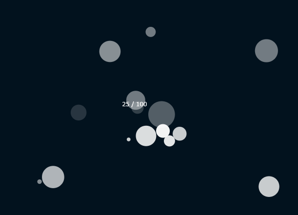

パーティクルを範囲外で削除する
実行例
 実行結果を見る
ソースコード
TypeScript
解説/アルゴリズム
パーティクルの要素が画面外に出たら削除するように調整する。
for (let i = 0; i < particles.length; i++) {
const particle = particles[i];
update(particle);
p.fill(color.fill, particle.opacity);
p.circle(particle.x, particle.y, particle.radius);
if (
particle.x + particle.radius < 0 ||
p.width <= particle.x - particle.radius ||
particle.y + particle.radius < 0 ||
p.height <= particle.y - particle.radius
) {
particles.splice(i, 1);
i--;
}
}
Particle#update() で位置の更新を終えた後、画面からはみ出ているなら配列から該当要素の削除を行う。
備考
速度が極端に小さいといつまでも画面に残るので、小さい値が出ないように調整を行うか、ライフスパンのような一定時間で必ず消えるような調整を採用するとよりよい。